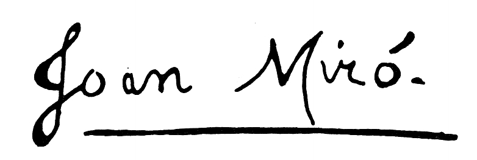

JOAN MIRO

BIOGRAFIA
Joan Miró nace en Barcelona en 1893, pero sus paisajes emocionales, los que lo formarán como persona y artista, son esencialmente Mont-roig, París, Mallorca y más adelante Nueva York y Japón.
Mont-roig, una pequeña población de la comarca del Baix Camp, será el contrapunto a la agitación intelectual que vive en París en los años veinte junto a los poetas surrealistas, y al estímulo del expresionismo abstracto que descubre en Nueva York en los años cuarenta.
Más tarde, en plena Segunda Guerra Mundial, Joan Miró abandonará su exilio en Francia y se instalará en Palma de Mallorca, espacio de refugio y de trabajo, donde su amigo Josep Lluís Sert diseñará el taller que siempre había soñado.
